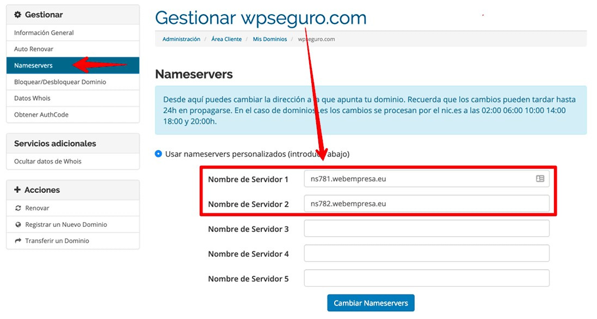
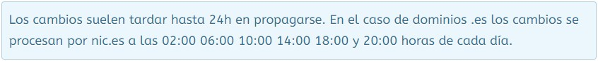

o normal es que los DNS puedas asignarlos desde tu panel de Cliente (en la mayoría de proveedores). En el caso de clientes de Webempresa los DNS pueden asignarse o modificarse desde el Área de Cliente, Dominios, Mis Dominios, pestaña Nameservers del dominio seleccionado (clic en el botón verde “Activo”).

Una vez realizas el cambio normalmente la propagación del cambio de DNS no es inmediata y tendrás que esperar un tiempo prudencial para que se aplique el cambio y tu dominio responda a estos DNS y sea visible tu web.
La propagación de DNS se refiere al tiempo que tardan los cambios de DNS en transmitirse a través de Internet.
Por regla general los dominios con TLD es son los que más tardan en activarse o en aplicar cambios de DNS.

Por el contrario los dominios de TLD superior como com, net u org suelen propagarse en las 4 horas siguientes a partir del cambio de DNS, no obstante en la mayoría de casos en los siguientes minutos al cambio suelen estar ya disponibles.
Siempre puede haber excepciones, por lo que una dosis de paciencia y tranquilidad es fundamental en estos casos.